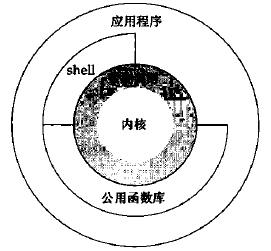

一、UNIX体系结构
严格来说，操作系统可定义为一种软件，它控制计算机硬件资源，提供程序运行环境。我们通常将这种软件称为内核。因为它小且位于计算机体系的核心。
下图显示了UNIX系统的体系结构：

上图阴影部分为系统调用，所有的系统调用都会从用户空间中汇聚到 0x80中断点，同时保存具体的系统调用号。
C语言中的open()、read()等函数都是通过系统调用触发中断，进而调用驱动函数完成读写操作。
二、文件和目录
UNIX文件系统是一直树形层次结构，所有文件的起点是一个为根的目录，它是“/”。在UNIX系统中本着是一切皆文件的思想，比如在命令行中执行如下命令，就会显示/etc目录的下的文件和目录。
$ vi /etc
创建新目录时会自动创建两个文件夹：.（点）和..（点点）。.（点）表示当前目录，..（点点）表示父目录。有一个特殊的情况，那就是根目录“/”下的.（点）和..（点点）是同一个路径，都是“/”。
由斜线“/”开头的路径都是绝对路径，反之则是相对路径。
下面是一个用C实现的ls命令代码：
1 #include <dirent.h>
2 #include <stdio.h>
3
4 int main(int argc, char const *argv[])
5 {
6 if (argc != 2)
7 {
8 printf("usage: %s <directory>\n", argv[0]);
9 return -1;
10 }
11
12 DIR *dp;
13 struct dirent *dirp;
14
15 if (!(dp = opendir(argv[1])))
16 {
17 printf("can't open %s\n", argv[0]);
18 return -2;
19 }
20
21 while ((dirp = readdir(dp)))
22 {
23 printf("%s\n", dirp->d_name);
24 }
25
26 return 0;
27 }我们可以通过结果看到/etc目录下有.（点）和..（点点）两个目录。（仅展示部分结果）
$ ./a.out /etc
.
..
bluetooth
dbus-1
rsyslog.conf
三、输入和输出
在UNIX系统中输入和输出是经过抽象的，所有的输入和输出都是通过文件来完成的。当我们读写时，是在对文件进行读写，而实际上该文件可能管理映射到硬件（如LED、按键等），也可能是一个socket套接字。
文件的抽象是通过文件描述符实现的，打开一个文件得到一个文件描述符，它通常是非负数的，我们使用read()、write()读写时，都是对文件描述符进行操作。
标准输入、标准输出和标准错误也是三个文件描述符，且一般情况下，它们被shell默认打开并默认被系统映射到硬件设备。我们可以使用“<”和“>”来重定向这三个文件描述符默认打开的设备。比如执行之前的命令：
$ ./a.out > /dev/null
此时我们会发现命令行中没有输出，因为此命令将输出结果重定位到/dev/null空设备中。
四、程序和进程
程序是静态的进程，而进程是运行着的程序。程序本质上是一个存在硬盘上的可执行文件。程序被加载到内存中之后就开始执行，此时程序变成一个动态的进程。每一个进程都有一个标识符，称为进程ID，其是一个非负数，且在当前时刻是唯一的。
有3个可以用于控制进程的系统调用：fork、exec和waitpid。其中exec是一系列函数的统称。
每一个进程都是一个独立的个体。一个进程可以拥有多个线程。
通常，一个进程只有一个主线程，也就是main函数的线程。当我们需要同时处理多个任务时（比如我们一边听歌、一边走路），就需要使用多线程。一个进程内的所有线程共享当前进程的内存空间、文件描述符、栈和进程相关的属性。由于所有进程共享进程的内存空间，因此在访问共享数据时需要采取同步措施以避免数据的不一致。
同进程类似，线程也有一个ID唯一标识每一个进程，但线程的ID只在进程内部有效，进程外部则无意义。
五、出错处理
当UNIX系统调用函数出错时，通常会返回一个负值。一般我们需要对出错进行处理。
系统调用函数通常会将错误返回值赋给errno，errno变量看起来像是一个int类型的变量，但实际上并不是。
早期的时候，它被简单的用int类型变量实现。但随着多线程出现之后，一个进程的errno变量是被多个线程共享的，当某一个线程因为出错而改变了errno变量之后，其他线程无法根据errno来判断自己当前的状态，造成了混淆，因此现在它通常被实现为一个函数调用。
extern int *__errno_location(void);
#define errno (*__errno_location())
C标准定义了两个函数，可用于打印出错信息。
#include <string.h>
char* strerror(int errnum);
#include <stdio.h>
void perror(const char *msg);
六、信号
信号（signal）用于通知进程发生了某种状况（比如执行除数为0的除法操作），则系统会发送一条通知至该进程，进程收到信号通知后，有3种应对处理方法：
举个例子，假设现在有一个程序，它有三种方式来处理用户通过键盘Ctrl+C（对应信号的SIGINT）发出的中断信号。
对于忽略信号，程序会忽略Ctrl+C，导致按Ctrl+C时没有任何反应。
对于按系统默认方式处理，Ctrl+C在系统中默认是终止程序，则程序会被终止。
对于提供一个函数，程序使用我们提供的函数进行处理，我们可以在函数中执行printf()等操作。
七、时间值
UNIX中有两种表示时间的方式。
一种是指日历时间（比如现在是几点几分），该值是从1970年1月1日以来经过了多少秒的形式，该秒数使用time_t类型表示。在UNIX系统中，可以使用time()函数来返回当前日期和时间。
#include <time.h>
time_t time(time_t *__timer);函数成功返回从1970年1月1日以来经过了多少秒，失败返回-1。
如果__timer指针非空，那么__timer指针所指的对象也被设置为相应的值。
返回的time_t对于我们来说没有意义，必须转换为我们可读的时间。UNIX系统提供了两个函数用于从time_t转换为年月日时分秒的时间结构类型，提供了一个逆向从年月日时分秒的时间结构类型转到time_t的函数，还提供了两个格式化输出的函数。其函数声明如下：
#include <time.h>
struct tm *gmtime(const time_t *timer); /* 转换为格林威治时间 */
struct tm *localtime(const time_t *timer); /* 转换为本地时间 */
time_t mktime(struct tm *tp);
size_t strftime(char* s, size_t maxsize, const char* format, const struct tm* tp);
size_t strftime_l(char* s, size_t maxsize, const char* format, const struct tm* tp, locale_t loc);对于前两个函数，成功返回相应指针，失败返回NULL；对于第三个函数，成功返回时间，失败返回-1；对于最后两个函数，成功返回字符数，失败返回0。
上面函数所使用或返回的struct tm如下：
struct tm
{
int tm_sec; /* Seconds: 0-59 (K&R says 0-61?) */
int tm_min; /* Minutes: 0-59 */
int tm_hour; /* Hours since midnight: 0-23 */
int tm_mday; /* Day of the month: 1-31 */
int tm_mon; /* Months *since* january: 0-11 */
int tm_year; /* Years since 1900 */
int tm_wday; /* Days since Sunday (0-6) */
int tm_yday; /* Days since Jan. 1: 0-365 */
int tm_isdst; /* +1 Daylight Savings Time, 0 No DST,
* -1 don't know */
};
示例代码如下：
1 time_t sec;
2 struct tm *stm;
3
4 while (1) {
5 time(&sec);
6 stm = localtime(&sec);
7 printf("Time: %4d-%02d-%02d %02d:%02d:%02d\r", 1900 + stm->tm_year, 1 + stm->tm_mon, \
8 stm->tm_mday, stm->tm_hour, stm->tm_min, stm->tm_sec);
9 Sleep(1); /* 休眠1秒 */
10 }
另一种是指进程时间，用来表示进程执行的时间。
我们可以用time命令来得知一个程序执行所花费的时间：
$ time ./a.out > /dev/null
在程序中可以使用clock_gettime()函数用来计时，比如从当前程序开始执行开始到程序停止执行为止统计总计花费了多少时间。
此函数可用于获取指定时钟开始之后的秒数。函数声明如下：
#include <time.h>
int clock_gettime(clockid_t __clock_id, struct timespec *__tp);函数成功时返回0，失败返回-1。
八、系统调用和库函数
所有的操作系统都提供多种服务的入口点，由此程序可以向内核请求服务。各种版本的UNIX实现都提供良好定义、数量有限、直接进入内核的入口点，这些入口点被称为系统调用。
系统调用接口在man手册的第二部分中说明，是使用C语言定义的。比如：
$ man 2 read
公用函数库接口在man手册的第三部分中说明，也是使用C语言定义的。它们不一定是内核的入口点，部分会间接使用一个或多个内核系统调用，而有些则完全不使用。
从实现角度看，系统调用和公用函数库有着本质区别，系统调用是伴随内核而产生的，在用户空间是不可替换的。公用函数库是编译器厂商根据语言标准而实现的，可以更新和替换。
从用户角度看，它们没有太大区别。
下一章 第三章：文件I/O